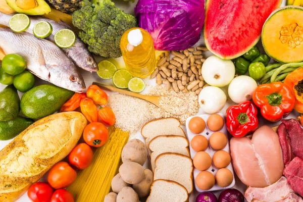

Comer bem é um ato de cuidado com você.
Uma alimentação equilibrada fornece os nutrientes que seu corpo precisa para funcionar bem todos os dias. Aqui você encontra informações científicas, inspirações e dicas práticas para fazer escolhas mais saudáveis.


Pequenas mudanças, grandes resultados.
Conhecer os grupos alimentares e o papel de cada nutriente ajuda a montar refeições mais equilibradas no dia a dia. Abaixo você encontra um resumo prático sobre proteínas, carboidratos, gorduras boas, vitaminas e minerais — e como incorporá-los sem complicação na sua rotina.
Clique em um nutriente abaixo para ler a sua explicação detalhada.
As proteínas são responsáveis pela construção e reparação de músculos, pele e órgãos, além de participarem da produção de enzimas e hormônios. Estão presentes em carnes, ovos, leguminosas e laticínios.
São a principal fonte de energia para o corpo e o cérebro. Carboidratos complexos, como grãos integrais e tubérculos, liberam energia de forma gradual e ajudam a manter a saciedade.
Gorduras insaturadas, presentes no azeite, abacate e oleaginosas, ajudam na absorção de vitaminas e na saúde cardiovascular, além de serem essenciais para o funcionamento do cérebro.
Vitaminas e minerais regulam funções vitais do organismo, do sistema imunológico à saúde dos ossos. Frutas, verduras e legumes coloridos garantem uma boa variedade desses nutrientes.